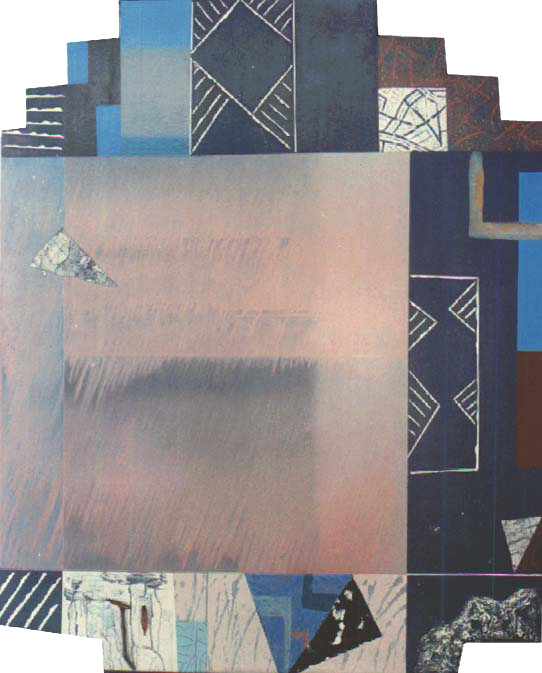

Written on 22/05/2013, 03:04 by
Written on 19/05/2013, 01:58 by
Written on 15/05/2013, 02:44 by
Written on 27/04/2013, 02:49 by
Written on 31/08/2012, 08:53 by

To describe Veneracion’s work is to bring back the context of his early period. In the early 1970’s, or even before that an attitude that divides the...